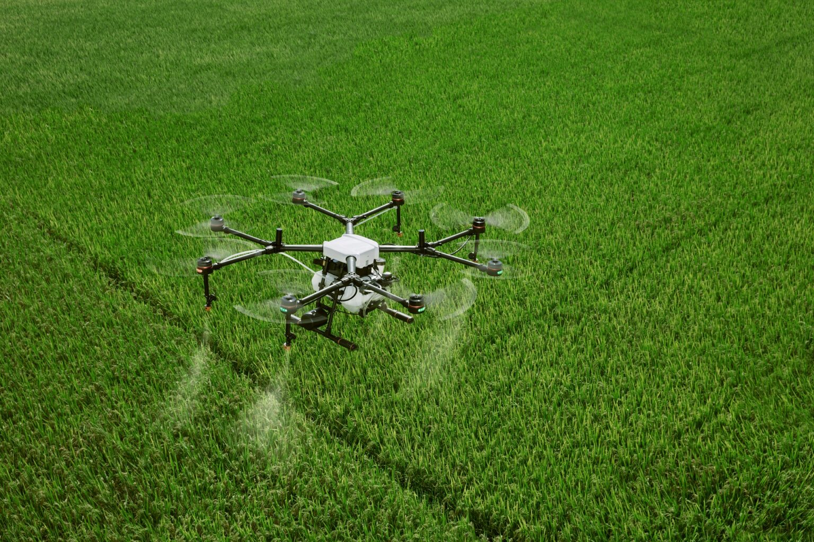

A cana-de-açúcar é uma das culturas mais importantes para a economia brasileira, sendo a principal matéria-prima para a produção de açúcar e etanol. O Brasil é o maior produtor mundial de cana-de-açúcar, com destaque para a região Centro-Sul, onde São Paulo se sobressai como o maior produtor estadual.
Plantação de cana-de-açúcar no Brasil.
O cultivo da cana-de-açúcar está fortemente ligado ao setor energético, sendo uma fonte importante para a produção de biocombustíveis e eletricidade, além da exportação de açúcar refinado.
Equipamentos de Precisão no Manejo da Cana-de-Açúcar
A agricultura de precisão desempenha um papel importante no cultivo da cana, com o uso de tecnologias que permitem maior eficiência na aplicação de recursos, reduzindo custos e aumentando a produtividade.
GPS Agrícola
O GPS agrícola é amplamente utilizado no cultivo da cana para monitoramento e automação das operações de plantio e colheita, garantindo maior precisão e eficiência nas operações de campo.
Uso de GPS em máquinas agrícolas.
Sensores de Solo
Sensores de solo monitoram os níveis de umidade, nutrientes e temperatura, permitindo ajustes precisos na irrigação e no manejo da lavoura de cana, garantindo maior eficiência e sustentabilidade.
Sensores de solo usados no manejo da cana-de-açúcar.
Máquinas com Taxa Variável
Máquinas com tecnologia de taxa variável permitem a aplicação de insumos na quantidade exata necessária em cada parte da lavoura, otimizando o uso de sementes, fertilizantes e defensivos agrícolas.
Máquinas agrícolas com taxa variável.
Drones
Drones auxiliam no monitoramento da plantação, identificando pragas, doenças e áreas de baixa produtividade, permitindo que os agricultores tomem decisões baseadas em dados precisos.

Drone utilizado no monitoramento da plantação de cana-de-açúcar.